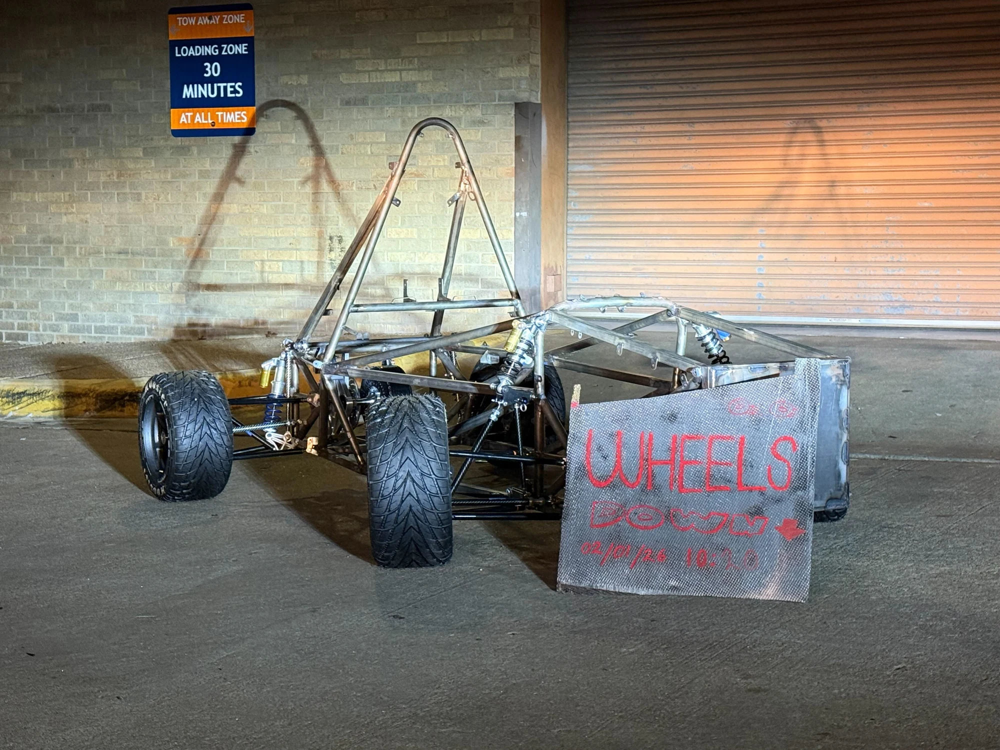
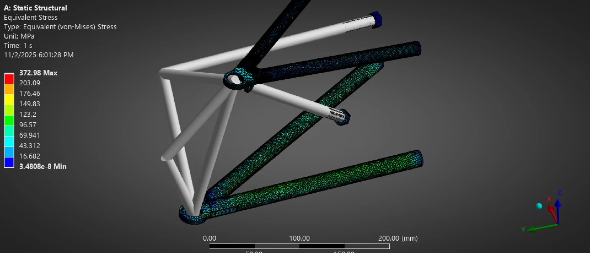
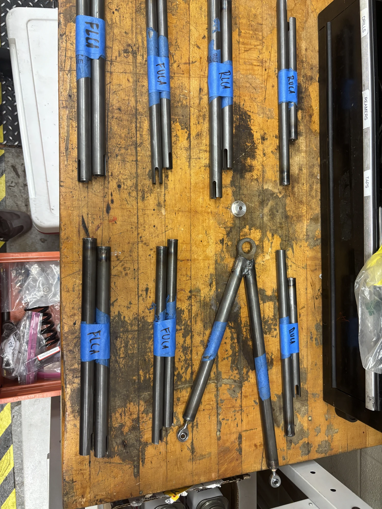
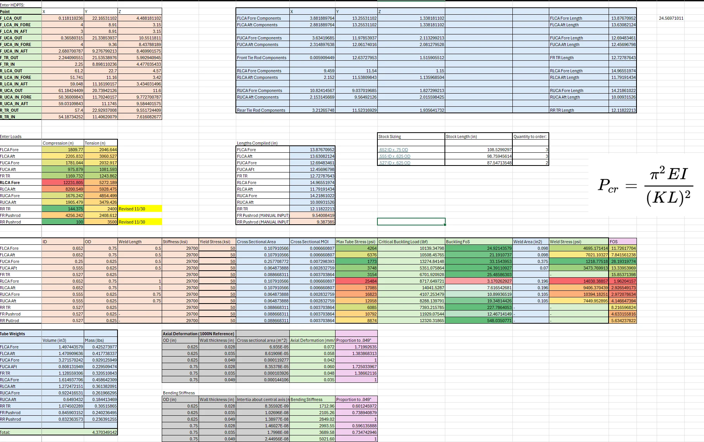
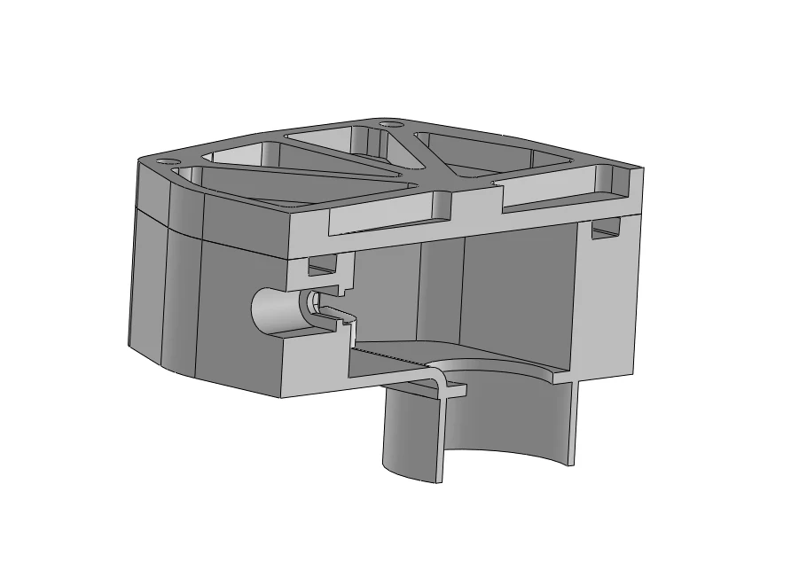
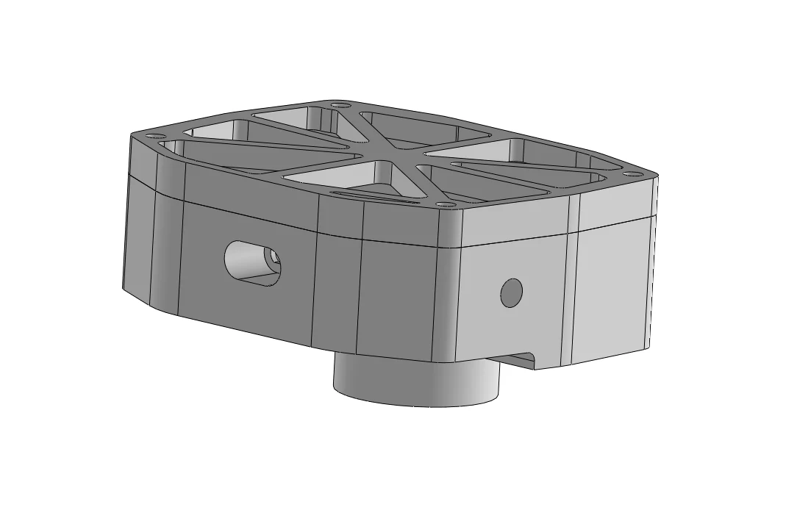

01 / Longhorn Racing Electric FSAE
Suspension, from analysis
to assembly.
Designing suspension linkages and sensor enclosures for the 2026 electric Formula SAE car.

01 / The work
Connecting design
and analysis.
As part of the Longhorn Racing suspension team, I designed double-wishbone suspension linkages and apexes for the 2026 FSAE car. My work connects structural analysis, component design, and the hardware that becomes the suspension assembly.
My contribution
- Designed suspension linkages and apexes.
- Used ANSYS finite element analysis, buckling calculations, and a custom Python truss-analysis script to evaluate and refine linkages.
- Developed a first-principles Excel calculator for vehicle characteristics, including motion ratios, ride frequencies, jacking forces, and roll rates.
- Iterated enclosures for ride-height sensors at all four corners.
02 / Structural analysis
From loads
to linkages.
I combined analytical calculations with finite element analysis to evaluate suspension members. The calculation work includes member geometry, tension and compression loads, tube sizing, buckling, stresses, weight, and stiffness.
{kind=link}

{kind=link}

{kind=link}

The member-sizing worksheet and the vehicle-characteristics calculator address different parts of the design process: component-level structural checks and vehicle-level suspension behavior.
03 / Sensor enclosure
Keeping water
out of the housing.
I iterated an electronics enclosure for the ride-height sensors, using Parker’s O-Ring Handbook for seal selection and groove sizing.
{kind=link}

{kind=link}

The enclosure passed both a 10-minute immersion test and a 10-minute low-velocity water-spray test.
Next project